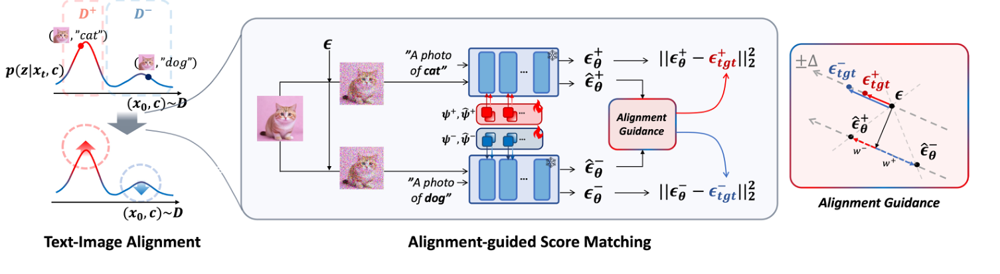
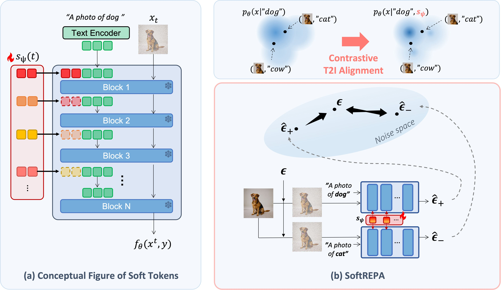
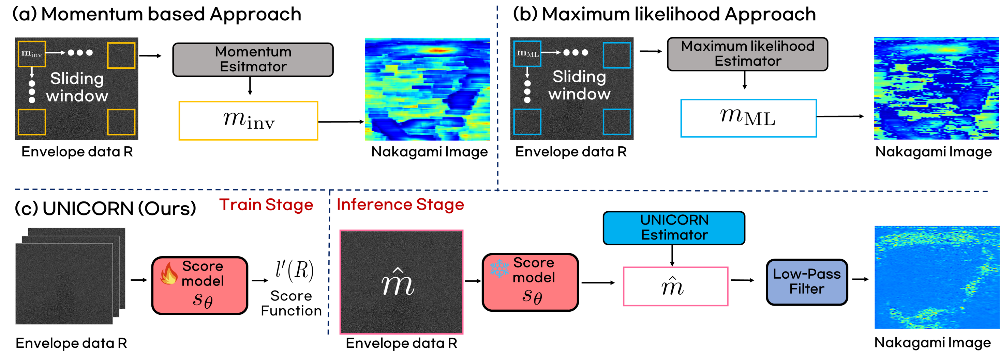
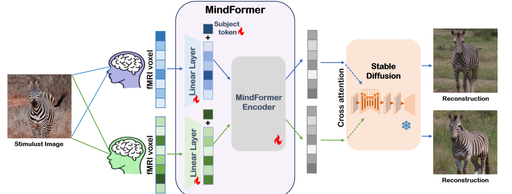

Research Intern, Disney Research Zurich
Worked on the diffusion team, advised by Vinicius C. Azevedo, contributing to diffusion model training and preprocessing tools.
KAIST AI / BISPL Lab
I am a PhD student at KAIST AI, advised by Prof. Jong Chul Ye, working on T2I/T2V diffusion models and multimodal alignment for generative AI.
My recent work focuses on diffusion RL for text-to-image alignment and representation alignment in generative models. Currently, I'm working on AR video diffusion models. I also bring a medical imaging background from MRI reconstruction, and medical image analysis.
Feel free to reach out if you would like to connect or discuss research.
Worked on the diffusion team, advised by Vinicius C. Azevedo, contributing to diffusion model training and preprocessing tools.

ICML 2026 Spotlight (top 2.2%)
A reward-free diffusion RL method that improves text-to-image alignment without relying on external reward models.

NeurIPS 2025
A lightweight contrastive fine-tuning strategy that improves text-to-image alignment with learnable soft tokens.

arXiv, 2026
Score matching and adaptation for ultrasound Nakagami imaging and hepatic steatosis assessment.

MR Reconstruction in k-space using Vision Transformer boosted with Masked Image Modeling, ISMRM 2023.
Metal Artifact Correction MRI Using Multi-contrast Deep Neural Networks for Diagnosis of Degenerative Spinal Diseases, MICCAI Workshop 2022.
An unsupervised two-step training framework for LDCT denoising, Medical Physics 2023.
Unsupervised Domain Adaptation for Low-dose Computed Tomography Denoising, IEEE Access 2022.
Wavelet Subband-specific Learning for Low-dose Computed Tomography Denoising, PLOS ONE 2022.
BISPL Lab, advised by Prof. Jong Chul Ye.
MRI Lab, advised by Prof. Sung-Hong Park. Worked on MRI reconstruction and metal-artifact correction.
Dean's List, five semesters. Research intern in the Medical AI & CV Lab, advised by Prof. Jang-Hwan Choi.